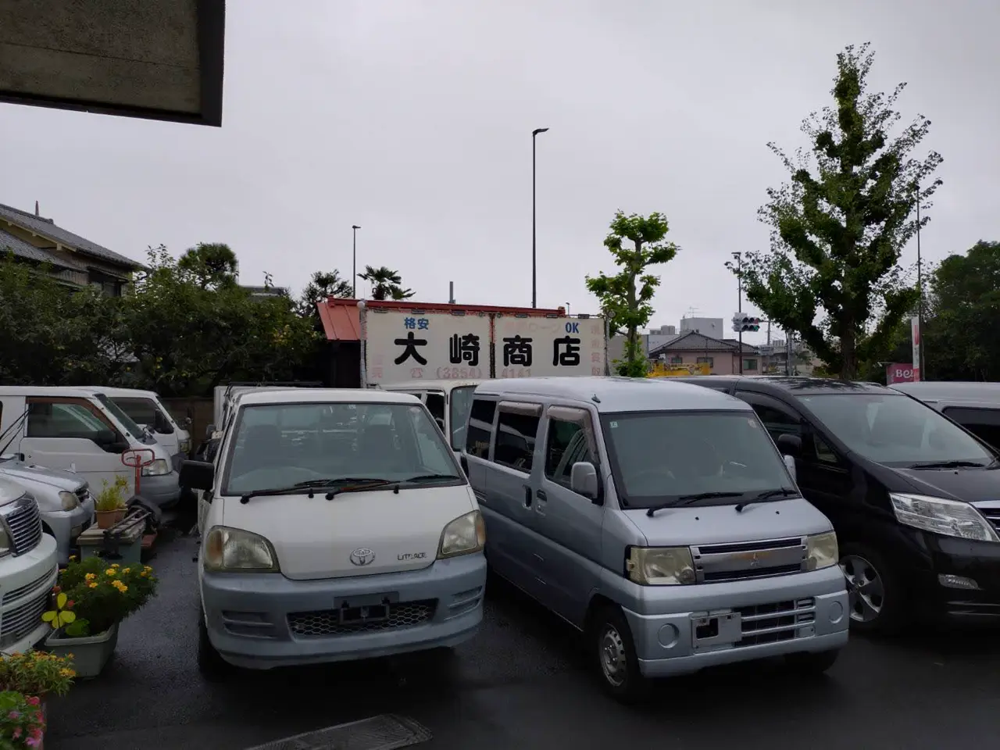
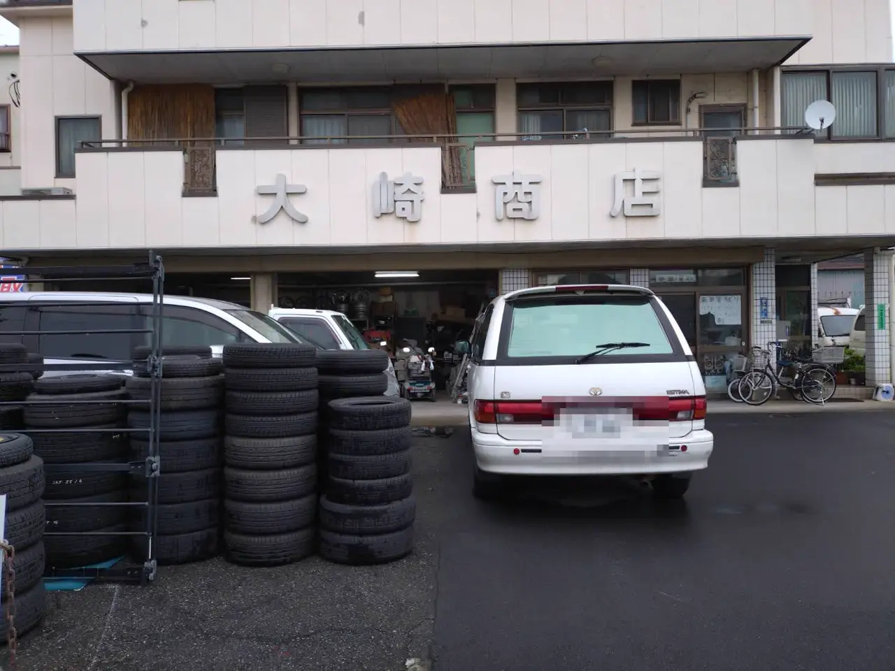
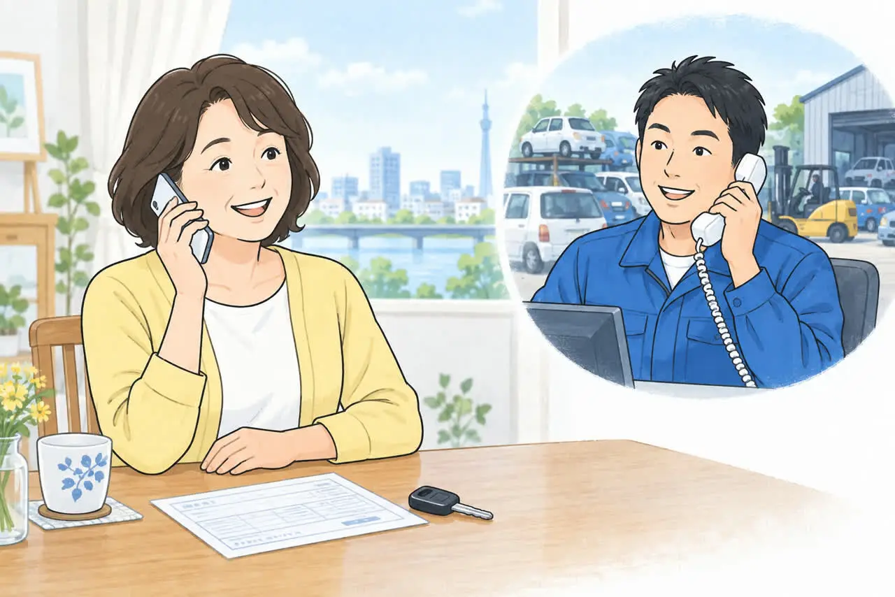
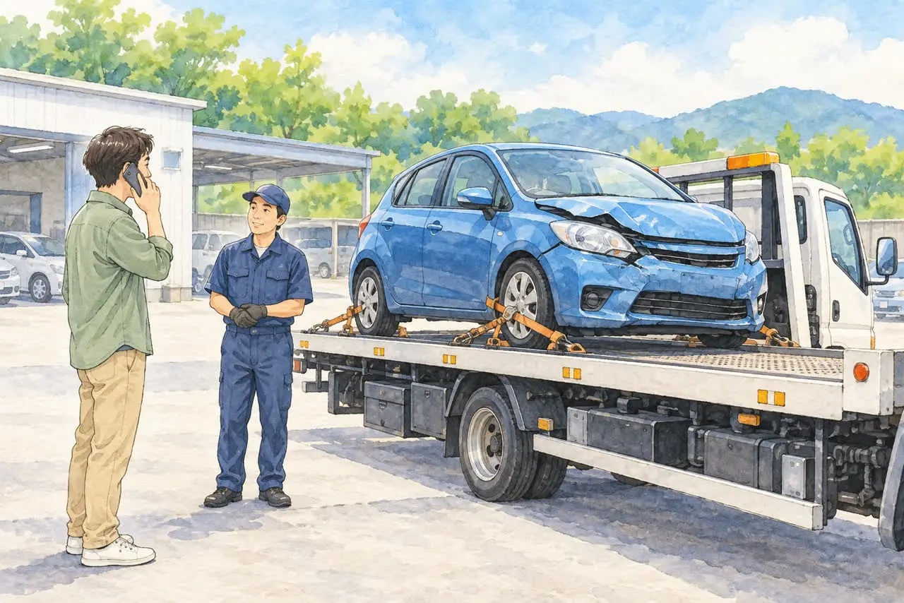
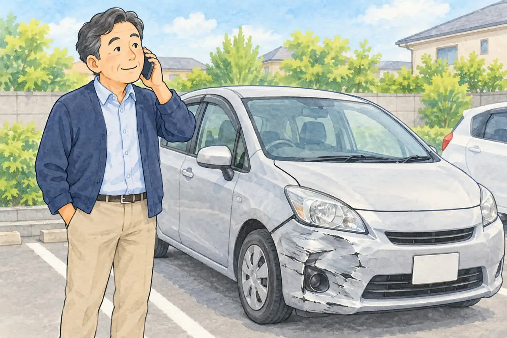
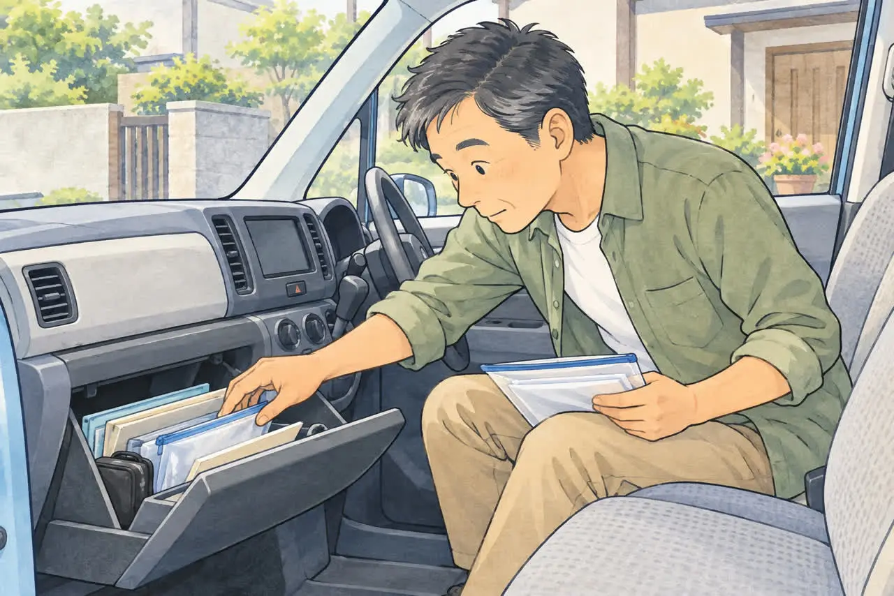
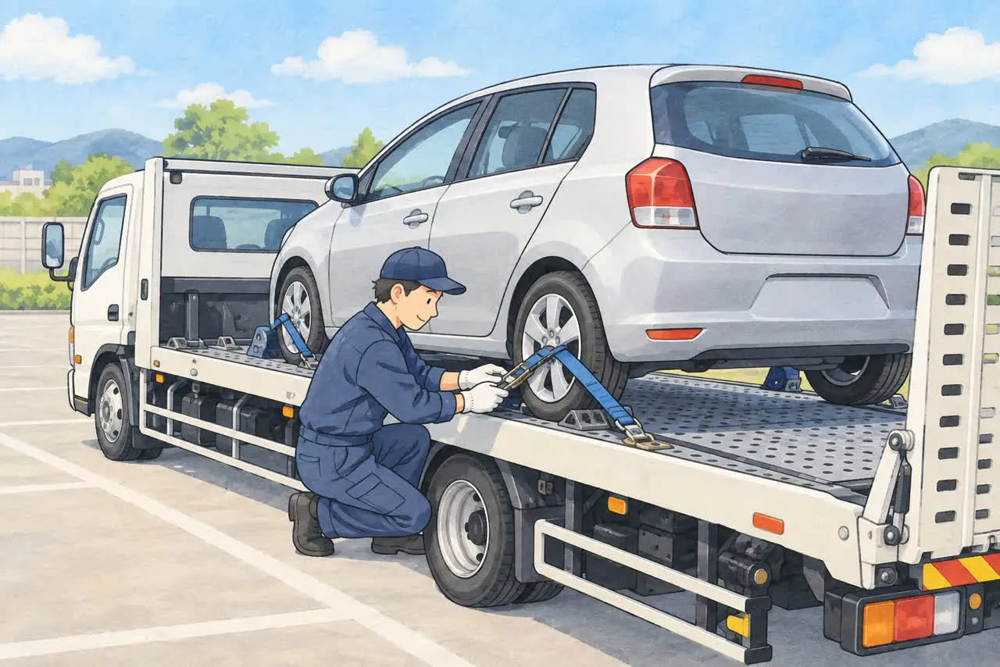
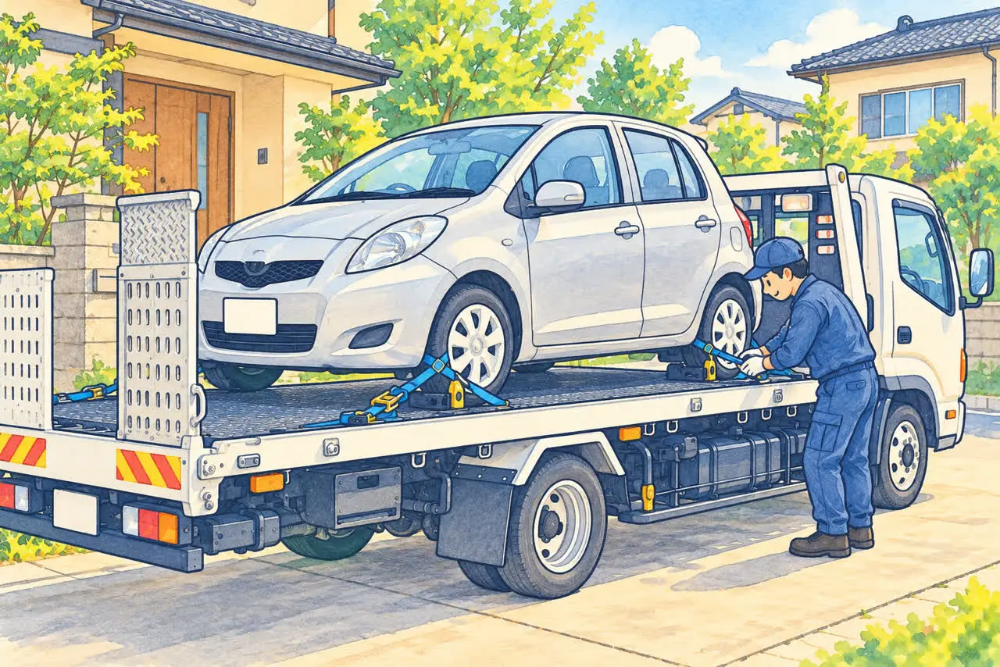
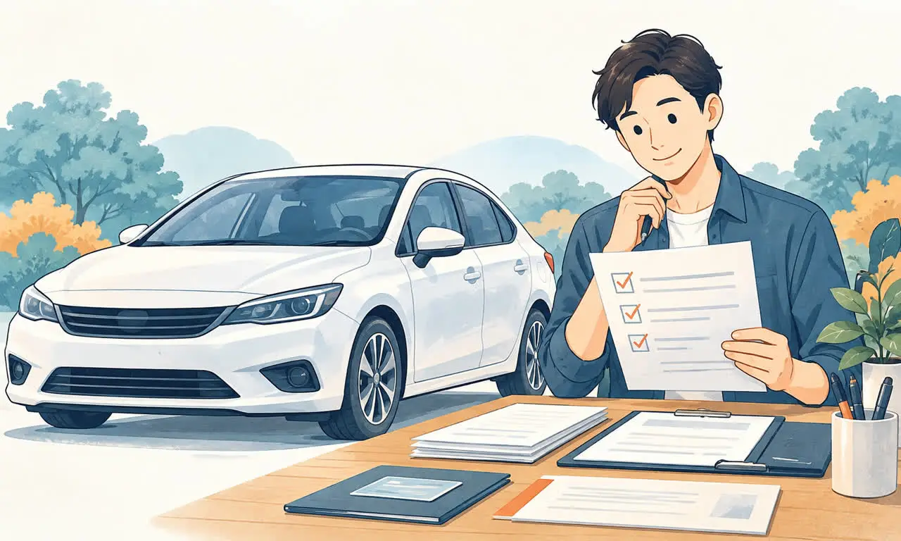
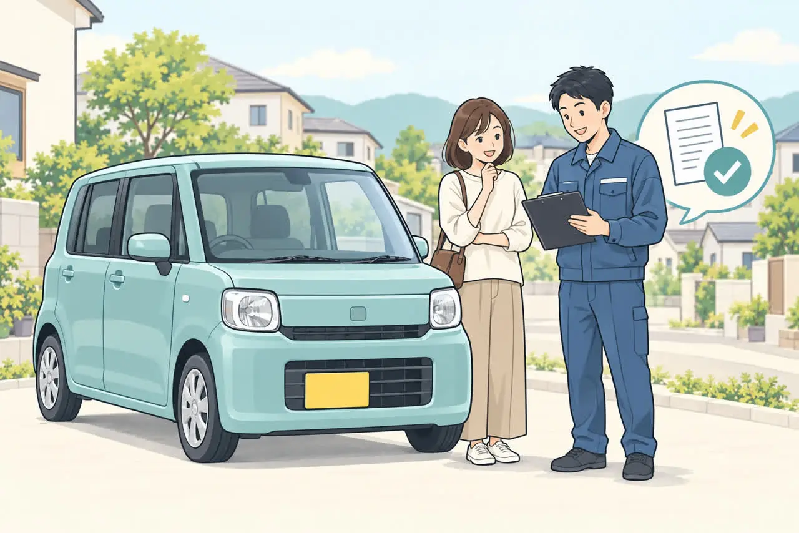

事故車・不動車も
無料引き取り
無料の目安は片道約30分圏内。
圏外も状況によりご相談ください。
愛車の最後まで、地域のお店に。
廃車手数料無料 ／ その場で現金買取も
☎ 電話で相談する ›受付 月〜土 10:30〜18:00
※無料引き取りは環七店から片道約30分圏内が目安。圏外も状況によりご相談。
買取の可否・金額は車種や状態によります。


地域の皆さまに
親しまれるお店を目指して
お車の状態やご希望を
まずはお聞かせください。
ご指定の場所まで伺います。
対応エリア内は出張費0円。
車種・状態に応じて査定。
廃車手続きも代行します。

初めての廃車相談に廃車のご依頼から現金お支払いまでの流れ電話1本で進む3ステップを、イラスト付きでご紹介します。記事を読む →無料の目安は片道約30分圏内。
圏外も状況によりご相談ください。
廃車手続き代行・自動車解体。
軽自動車の廃車も無料です。
環七店・入谷店の2店舗。
在庫はお問い合わせください。
SERVICE
普通自動車・軽自動車をはじめ、どんなお車でも対応。
引き取り・買取・廃車手続き・中古部品販売の詳細はこちら。
〒123-0872 東京都足立区江北7丁目1−3
環七沿い／舎人ライナー 西新井大師西駅
地図を見る ↗






CONTACT
引き取りのご相談・部品のお問い合わせはこちら
☎ 03-3854-4141環七店：月〜土 10:30〜18:00（日曜・祝日休業）